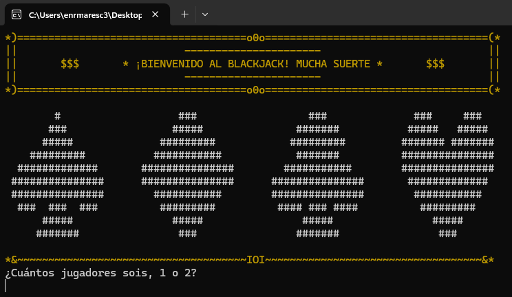

Juego en consola de C#: Blackjack

Proyecto del primer trimestre para la asignatura de Programación en 1º de DAW. El juego imita una partida de Blackjack con todas sus acciones correspondientes. En ella pueden participar hasta 2 jugadores (sin conexión remota, solo en el local).
Ir al proyecto en GitHub- C#